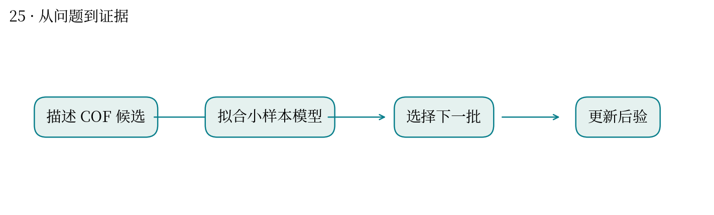
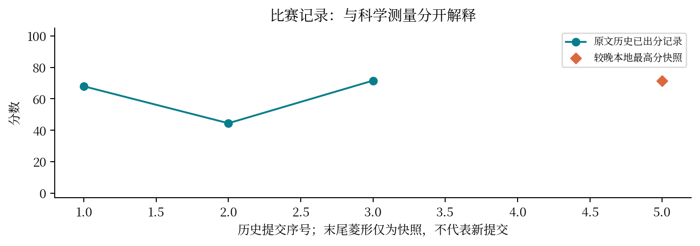

怎样找到更善于分离氙和氪的多孔材料？
最高分快照：71.57 · 2026-10-12T01:11:24+08:00
COF 孔道的结构和化学环境影响气体吸附选择性。主动学习用有限测量更新模型，再选择下一批候选。
以约 20 个实测标签开始，比较 12 类方法和后验校准，每轮选择 20 点；审查模拟响应与隐藏真值的区别。
早期分数约 67.957，较晚快照为 71.57。小样本条件下模型不确定性本身也需要验证。
高选择性未必同时有高吸附量；题设指标和实际应用目标可能不同。代理世界中的胜出不能当成隐藏集胜出。
与你在高成本组学实验中挑样本相似：模型应指出哪些样本最值得追加数据，而不只是给已有样本排序。
当前没有隐藏响应，不能据自造模拟数据宣布某策略普遍优胜；适用边界应写清。


| attempt | 提交时间 | 分数 | 状态 |
|---|---|---|---|
| 51804 | 10-10 23:53:28 | 67.957 | 已出分 |
| 52140 | 10-11 01:10:38 | 44.4608 | 已出分 |
| 53814 | 10-11 11:31:03 | 71.5701 | 已出分 |
| 54557 | 10-11 15:50:37 | — | 排队中 |
源文件 SHA256 见 证据清单；用 scripts/build.py 重建图表。